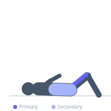
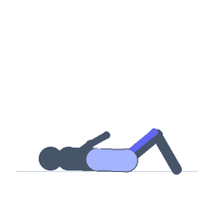

Exercise guide / Lying Leg Raise
Lying Leg Raise
The lying leg raise trains the hip flexors and lower abdominals by raising the legs from a flat position to vertical while keeping the lower back in contact with the floor. It is an effective exercise for developing lower abdominal strength and hip flexor endurance.
Primary muscles
iliacus
psoas major
Secondary muscles
rectus abdominis
Stabilizers
transverse abdominis
Equipment
No Equipment (Bodyweight)


Starting position
- Lie flat on your back with legs extended and hands at the sides or tucked under the lower back for support. Lower back in contact with the floor.
Setup
- If the lower back arches off the floor, the core is not strong enough for this exercise — start with bent-knee raises.
Steps
- With legs straight or slightly bent, raise them from the floor to vertical (90 degrees).
- Lower under control back toward the floor.
- Stop just before the heels touch the floor to maintain tension.
Coaching cues
- Push the lower back into the floor the entire time
- Slow descent — the eccentric is where the work happens
Breathing
- Exhale as legs rise. Inhale as they descend.
Range of motion
- Legs from just above floor level to 90 degrees. The lower you go, the more core demand.
Tempo
- 2-0-3-0
Common mistakes
- Allowing the lower back to arch off the floor
- Dropping the legs quickly without eccentric control
Safety
- If the lower back arches significantly, perform bent-knee raises instead
Training
- hypertrophy: 10–20 reps
- hypertrophy: 3–4 sets
- Rest: {'hypertrophy': 60}